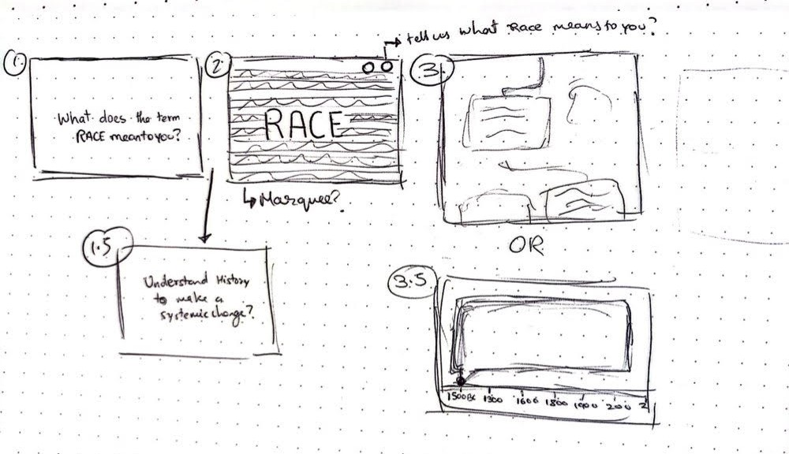

In this first story board I thought about how the audience would come about this website as well as why one would use this website. Sharing the board made me visualize the use of it and how it could be displayed.
For the second story board I focused on how it would look on the website. With a loading page with a question that motivates audience to think. A landing page about my data from credible sources talking about race and its social meanings
